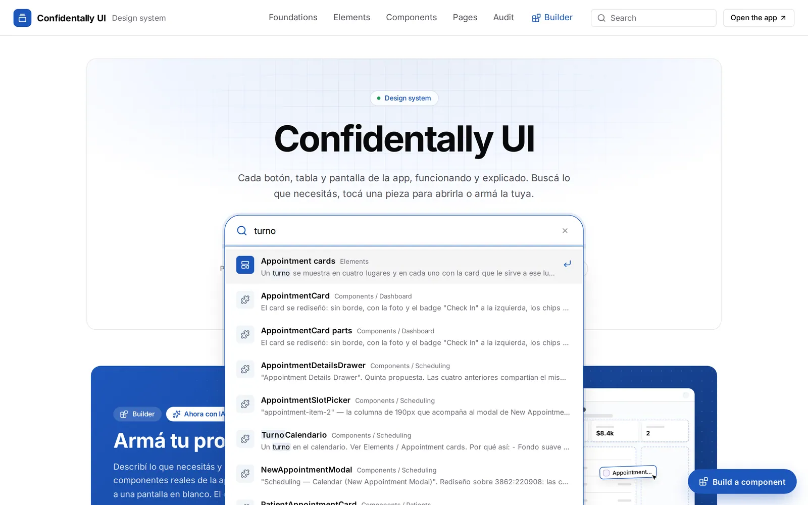

Confidentally UI
A living design system: every button, table and screen of the app, working and explained, plus a Builder that assembles new screens from the real components.Un design system vivo: cada botón, tabla y pantalla de la app, funcionando y explicado, más un Builder que arma pantallas nuevas con los componentes reales.

Documentation that can’t fall out of date.Documentación que no se puede desactualizar.
The design system was designed in Figma. With Claude Code I took it to code, component by component, and published it in Storybook, where the developers take each piece. Storybook imports the same components the app uses, so when the code changes, the documentation changes with it.El design system se diseñó en Figma. Con Claude Code lo llevé al código, componente por componente, y lo publiqué en Storybook, de donde los devs toman cada pieza. Storybook importa los mismos componentes que usa la app, así que cuando cambia el código, la documentación cambia con él.
I hid Storybook’s own chrome and designed a documentation site on top: a top bar with six sections, a search, a menu per section and the same page layout for every component.Oculté la interfaz propia de Storybook y diseñé encima un sitio de documentación: una barra superior con seis secciones, un buscador, un menú por sección y el mismo layout de página para cada componente.
From Figma to Storybook, through Claude Code.De Figma a Storybook, pasando por Claude Code.
and the codelee el diseño
y el código
named as in Figma139 componentes,
con los nombres de Figma
481 live examplesConfidentally UI ·
481 ejemplos en vivo
The same thing, built several ways.Lo mismo, hecho de varias formas.
Screen titles came in at 20, 24 and 36px. The appointment card of the patient overview was written by hand, and the calendar one was repeated three times in the same file. Colors were typed as hex values instead of tokens. Designers and developers needed one answer to the same question: which one do I use?Los títulos de pantalla aparecían en 20, 24 y 36px. La tarjeta de turno del resumen del paciente estaba escrita a mano y la del calendario se repetía tres veces en el mismo archivo. Los colores se escribían como hexadecimales en vez de tokens. Diseño y desarrollo necesitaban una respuesta a la misma pregunta: ¿cuál uso?
Designers and developers needed one answer to the same question: which one do I use?Diseño y desarrollo necesitaban una respuesta a la misma pregunta: ¿cuál uso?
From the smallest decision to the whole screen.De la decisión más chica a la pantalla entera.
- 01
FoundationsFoundations
Colors, typography, radius and shadows, read from the app’s CSS, each token with its light and dark value.Colores, tipografía, radios y sombras, leídos del CSS de la app, cada token con su valor claro y oscuro.
- 02
ElementsElements
Ten standard pieces: page header, buttons, fields, tabs, pills, cards, appointment cards, tables, navigation and the patient menu.Diez piezas estándar: encabezado, botones, campos, pestañas, pills, tarjetas, tarjetas de turno, tablas, navegación y el menú del paciente.
- 03
ComponentsComponents
128 pieces by module: Clinical 39, UI 20, Dashboard 12, Patients 12, Ledger 11, Settings 11, Scheduling 9, Layout 8, Help 5, Billing 1.128 piezas por módulo: Clinical 39, UI 20, Dashboard 12, Patients 12, Ledger 11, Settings 11, Scheduling 9, Layout 8, Help 5, Billing 1.
- 04
PagesPages
Every route of the app, mounted from the same router.Cada ruta de la app, montada desde el mismo router.
- 05
AuditAudit
What the code does today that departs from the standard, measured by scripts.Lo que hoy hace el código que se aparta del estándar, medido con scripts.
- 06
BuilderBuilder
Where the pieces come together into new screens, by hand or described in words.Donde las piezas se juntan en pantallas nuevas, a mano o describiéndolas con palabras.

Three questions answered before anyone scrolls.Tres preguntas respondidas antes de scrollear.
Every page follows the same order: breadcrumb, name, one sentence, and Overview, Guidelines and Code tabs. Three status cards answer what a team asks first:Cada página sigue el mismo orden: breadcrumb, nombre, una frase y las pestañas Overview, Guidelines y Code. Tres tarjetas de estado responden lo primero que pregunta un equipo:
- Component · ReadyComponent · Ready when it has a playground and documented decisions.cuando tiene playground y decisiones documentadas.
- UsageUsage counted in the code, such as “Used in 10 files”.contado en el código, como “Used in 10 files”.
- DesignDesign with the decisions behind it, under “Why it looks like this”.con las decisiones detrás, bajo “Why it looks like this”.
Specs are measured from the rendered component, not typed by hand.Las medidas se toman del componente dibujado, no se escriben a mano.

I measured the button before I designed it.Medí el botón antes de diseñarlo.
Each variant, primary, secondary, ghost, link and destructive, is the look the code already used most for that kind of action. The sizes, 28, 32 and 36px, are the three heights the app used most. Hover, pressed, focus, disabled and loading are solved once, in one component.Cada variante, primary, secondary, ghost, link y destructive, es el aspecto que el código ya usaba más para ese tipo de acción. Los tamaños, 28, 32 y 36px, son las tres alturas más usadas en la app. Hover, presionado, foco, deshabilitado y cargando se resuelven una sola vez, en un componente.
The same logic shaped the appointment cards: one appointment appears in four places, and each place gets the card that serves it. Same patient, same time, same status.La misma lógica definió las tarjetas de turno: un turno aparece en cuatro lugares y cada lugar tiene la tarjeta que le sirve. Mismo paciente, mismo horario, mismo estado.

Search in the words people actually use.Buscar con las palabras que la gente usa.
The search reads names, descriptions, examples and Spanish synonyms. Typing “turno” finds every appointment component, even though none of them is called that in the code.El buscador lee nombres, descripciones, ejemplos y sinónimos en español. Escribir “turno” encuentra todos los componentes de turnos, aunque ninguno se llame así en el código.

An AI that builds screens with the design system’s own components.Una IA que arma pantallas con los componentes del propio design system.
The Builder assembles screens from the app’s own components on a canvas that starts with the real sidebar and top bar. Layers shows the tree, Code gives the TSX with its imports, PNG exports the design and Share link compresses it into the URL, with nothing uploaded to a server.El Builder arma pantallas con los componentes de la propia app, sobre un lienzo que arranca con la barra lateral y la barra superior reales. Layers muestra el árbol, Code da el TSX con sus imports, PNG exporta el diseño y Share link lo comprime en la URL, sin subir nada a un servidor.
Describe goes further: write “a patients screen with metrics, the table and today’s appointments on the right”, and it searches 379 pieces and 33 blocks and builds the screen block by block.Describe va más allá: escribís “una pantalla de pacientes con métricas, la tabla y a la derecha los turnos del día” y busca entre 379 piezas y 33 bloques y arma la pantalla bloque por bloque.
- With a free Gemini key,Con una clave gratis de Gemini, the model streams its reasoning and can only answer with pieces from the catalog.el modelo muestra su razonamiento y solo puede responder con piezas del catálogo.
- Without a key,Sin clave, a parser splits the sentence and recognizes about 45 kinds of data for fields.un parser divide la frase y reconoce unos 45 tipos de dato para los campos.
- Every result can be undone,Todo se puede deshacer, and each block keeps its alternatives.y cada bloque guarda sus alternativas.
- A privacy noteUn aviso de privacidad asks people not to type real patient data.pide no escribir datos reales de pacientes.
¿Qué querés armar? Ej: una pantalla de pacientes con métricas, la tabla y a la derecha los turnos del día
- Leyendo lo que pediste
- Buscando entre 379 piezas y 33 bloques de la app
- “métricas” → Stats
- “la tabla de pacientes” → Table · pacientes
- “los turnos del día” → Appointments
- Armando la pantalla
The system tells you when the code drifts.El sistema avisa cuando el código se desvía.
- Audit pagesLas páginas de Audit list colors without a token, pieces written outside the components, duplicates and missing states.listan colores sin token, piezas escritas fuera de los componentes, duplicados y estados faltantes.
- In CI,En CI, a check reports hard-coded colors that already have a token.un chequeo reporta colores escritos a mano que ya tienen token.
- Headers in the appHeaders in the app detects which header each screen uses and flags the ones that differ.detecta qué encabezado usa cada pantalla y marca los que no coinciden.


One answer to “which one do I use?”Una respuesta a “¿cuál uso?”
Published next to the app, updated from the code, and shared by design, development and product. The Builder turns it into a tool: a new screen starts from real components instead of a blank frame.Publicado junto a la app, actualizado desde el código y compartido por diseño, desarrollo y producto. El Builder lo convierte en una herramienta: una pantalla nueva arranca desde componentes reales y no desde un frame en blanco.